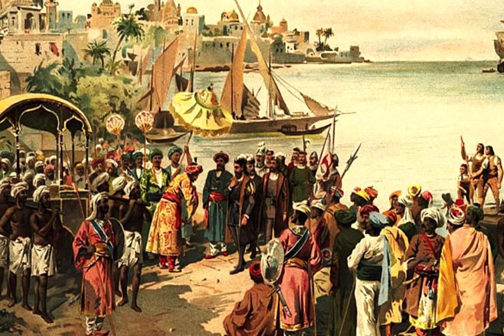

Islam muncul pada abad ke-7 M di Makkah, Semenanjung Arab, dengan Nabi Muhammad SAW sebagai utusan Allah. Wahyu pertama diterima beliau pada tahun 610 M di Gua Hira, menandai awal penyebaran Islam. Karena penentangan di Makkah, Nabi dan pengikutnya hijrah ke Madinah pada tahun 622 M, yang menjadi awal perhitungan kalender Hijriyah.
Di Madinah, Islam berkembang pesat, dan pada tahun 630 M, Nabi Muhammad berhasil menaklukkan Makkah. Setelah wafatnya beliau pada tahun 632 M, kepemimpinan dilanjutkan oleh Khulafaur Rasyidin, yang membawa Islam menyebar luas hingga ke luar Jazirah Arab.
Islam kemudian terus berkembang melalui perdagangan, dakwah, dan kekuasaan, menjadikannya salah satu agama terbesar di dunia.

Islam masuk ke Indonesia melalui jalur perdagangan pada abad ke-7 M. Para pedagang dari Timur Tengah, India, dan Persia membawa ajaran Islam ke wilayah-wilayah pelabuhan seperti Aceh, Malaka, dan Jawa. Mereka menyebarkan Islam melalui interaksi dagang, dakwah damai, dan perkawinan dengan penduduk lokal. Islam diterima dengan mudah karena pendekatannya yang fleksibel dan mampu berakulturasi dengan tradisi lokal.
Kerajaan-kerajaan Islam seperti Samudera Pasai, Demak, dan Cirebon menjadi pusat penyebaran agama Islam. Dari sana, Islam menyebar ke seluruh Nusantara dan menjadi salah satu agama utama di Indonesia melalui proses yang damai dan bertahap.